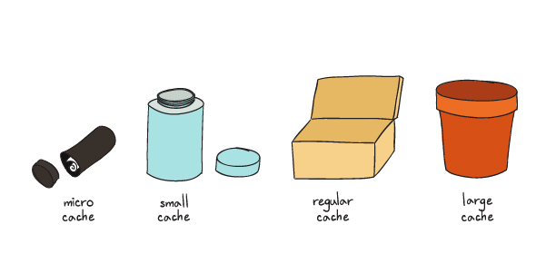
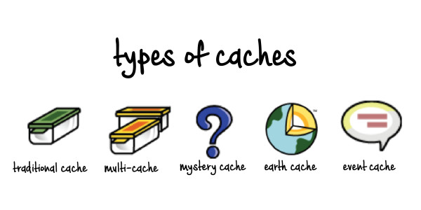
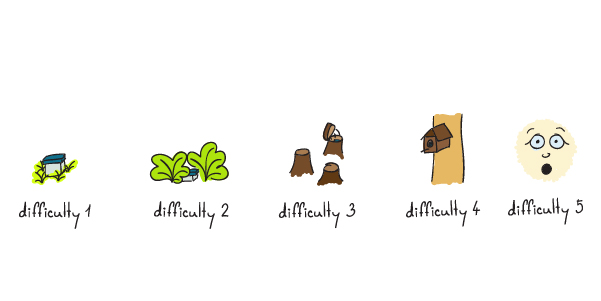
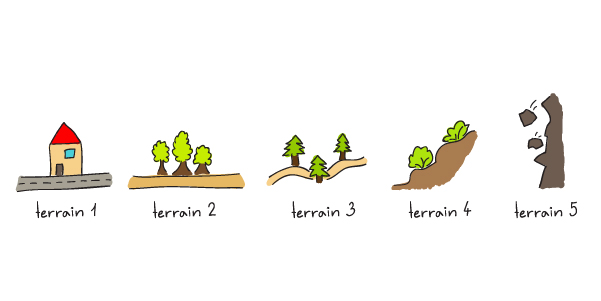

2) Pravidla hraní pro kačera
Jak se geocaching hraje?
a) Registrace na webu Geocaching
Nejprve se zaregistruj na oficiálním webu geocaching.com nebo stáhni aplikaci
Geocaching.
Po registraci získáš přístup k mapám a databázi keší po celém světě.
b) Vyber si keš

Pomocí mapy nebo aplikace (buď Cgeo - free verze, nebo Locus - potřeba Geocaching premium = cca 1000 kč/rok) si najdi keš v tvém okolí.
Keše jsou označeny GPS souřadnicemi, které tě dovedou na přibližné místo, kde je schovaná.
c) Připrav se na hledání
Nezapomeň si vzít GPS navigaci nebo chytrý telefon s GPS funkcí.
Některé keše mohou vyžadovat drobné vybavení (např. tužku na zapsání do logbooku).
Připrav se na dobrodružství venku, může to zahrnovat procházky lesem, výlety na hory, nebo hledání ve městě.
d) Hledej keš
Když dorazíš na místo podle GPS souřadnic, začni hledat keš.
Keše mohou být různě velké – od malých schránek o velikosti filmové krabičky po větší nádoby.
Přečti si popis keše a nápovědu, která ti může pomoci s hledáním.
e) Nález keše
Když keš najdeš, opatrně ji otevři. Většinou obsahuje:
Logbook (deník), do kterého se zapíšeš.
SWAG (malé předměty na výměnu), které můžeš vyměnit za jiné.
Pamatuj, že pokud něco z keše vezmeš, měl bys tam vložit něco v podobné hodnotě.
f) Zapsání nálezu
Do logbooku v keši zapiš své uživatelské jméno a datum nálezu.
Poté keš pečlivě vrať zpět na její místo.
Následně zapiš svůj nález i na webu geocaching.com nebo v aplikaci. Případně můžeš přidat komentář nebo poděkování (TFTC – Thanks for the cache).
g) Další možnosti
Multikeš: Některé keše vyžadují návštěvu více stanovišť, kde postupně získáváš informace k nalezení finální keše.
Mystery keš: Pro nalezení některých keší je potřeba vyřešit hádanku nebo úkol.
Travel Bug a Geocoin: Pokud najdeš předmět s unikátním kódem (Travel Bug nebo Geocoin), můžeš ho vzít a přesunout do jiné keše. Cíl těchto předmětů je cestovat mezi kešemi a zaznamenávat svou cestu.
h) Respektuj pravidla
Respektuj přírodu a nepoškozuj okolí keší.
Pokud je keš poškozená, můžeš to oznámit majiteli keše (CO – Cache Owner).
Popis cache
a) Cache
Cache bývá voděvzdorná, většinou plastová schránka, kanystr, apod. Zakladatel cache (owner – majitel) po jejím umístění zveřejní její souřadnice na některý internetový server zabývající se geocachingem. Schránka by měla být dostatečně veliká, aby se do ní vešel deník (tzv. logbook), do něhož se zapisují její nálezci. Bývá zvykem umísťovat do cache také nějaké předměty na výměnu. Nálezce cache si smí takový předmět vzít (a například přenést do další cache), ale musí místo něj vložit něco vlastního (jiný předmět) pro další účastníky hry, o stejné nebo vyšší hodnotě.
b) Obsah
Schránka by měla vždy obsahovat alespoň logbook a informaci pro náhodné nálezce („mudlokarta“). Schránka (nebo alespoň logbook) by měla být jednoznačně označena názvem keš či Official Geocache.
Vhodným doplňkem základního obsahu keše je pak ještě tužka, uzavíratelný plastový sáček pro vodotěsné uložení logbooku a tužky a náhradní plastový sáček pro zabalení schránky (pokud je schránka od zakladatele takovým sáčkem opatřena).
Logbook, mudlokarta, vlastní schránka, obal, tužka, případně ořezávátko je stálou součástí keše, a nesmí se z ní odnášet, ani výměnou za jiné předměty!
Pokud to rozměry schránky cache dovolí, může zakladatel keše přiložit drobné předměty na výměnu, nebo trackovatelné předměty (TB nebo GC – viz níže).
Pokud nálezce v keši neobjeví žádný předmět na výměnu, nebo se mu žádný nelíbí, nemusí si jej vzít. Může v keši ale zanechat jiný takový drobný předmět. Rozhodně by si ale neměl vzít žádný předmět z keše, aniž by do keše jiný předmět o stejné nebo vyšší hodnotě výměnou vložil. Celková hodnota obsahu cache se nesmí výměnou snížit. Vhodnost konkrétních předmětů pro vložení do keše je dána jednak velikostí schránky, ale také představou, že nejčastějšími geocachery, kteří se na výměnu těší, jsou malé děti. Naprosto nevhodné jsou tedy předměty jako peníze (s výjimkou symbolických platných mincí jako např. jednotlivé mince cizích měn), cigarety, plynové zapalovače, předměty s nemravným vyobrazením apod. Nepřípustné je vkládání jakýchkoliv potravin (žvýkačky, sušenky, bonbony…).
c) Další dělení
ca) Podle velikosti

Nano – nejmenší schránka. Nevejde se do ní tužka a většinou obsahuje pouze „logbook“, který je i tak velmi malý (příkladem může být i GeoKnots Logsheet Roller). Tato velikost nemá podporu na geocaching.com, proto jsou keše této velikosti uváděny buďto jako Micro nebo Other.
Micro – velmi malá schránka (podle pravidel menší než cca 1 dl, tzn. patří sem i tzv. „nano-cache“). Typicky lehce upravená a přizpůsobená krabička od filmu, od bonbonů tic-tac, od léků apod. Často je také používán prefabrikát PET lahví. Pro její možnost umístit ji nenápadně i do frekventovaných prostor se používá nejčastěji pro keše v centrech měst apod. Micro-cache bývá doplněna magnetem pro snadnější uchycení na kovových konstrukcích a bývá i velmi umně maskována tak, aby co nejlépe splynula s okolím. Pro svoji miniaturní velikost se do micro-cache zpravidla nemohou vkládat žádné předměty na výměnu, ale téměř výhradně pouze logbook a případně tužka.
Malá – malá schránka, přibližně o objemu malé krabice na ohřívání potravin v mikrovlnné troubě, která se také jako schránka často používá. Small-cache obsahuje logbook a menší předměty na výměnu.
Střední – schránka běžné velikosti, vejdou se do ní kromě logbooku i větší předměty na výměnu, malé plyšové hračky apod. Často se pro ni používají běžné krabice na ohřívání potravin v mikrovlnné troubě.
Velká – specializované výjimečné schránky, jejichž nadměrná velikost bývá zaměřena speciálně pro ukládání větších předmětů na výměnu (např. knih a CD).
Other – schránka neurčitelné velikosti. Může to být například placatá magnetická nálepka nebo kniha v knihovně. Nově se touto velikostí označují i earthcache a eventy.
cb) Podle charakteru

Tradiční cache (český výraz tradička) – schránka je umístěna přímo na místě definovaném souřadnicemi zveřejněnými registrovaným členům.
Multi cache – k nalezení cílové (tzv. finální) skrýše je potřeba nalézt nejprve skrýš první (či splnit úkol či vyluštit šifru) danou zveřejněnými souřadnicemi a z informací získaných v první skrýši nalézt skrýš finální, případně druhou, třetí a další, postupně je nutné se propracovat až na tzv. finální skrýš. Multi cache mohou mít mnoho podob, spojuje je ale shodná filosofie postupného hledání řetězce pomocných skrýší nebo plnění úkolů směřujících k nalezení skrýše hlavní. Jednotlivé pomocné skrýše se nazývají stage (z angl. stage, tj. stupeň).
Mystery cache (český výraz mysterka) – zveřejněné souřadnice ukazují zpravidla do blízkého okolí cache, ale skutečné souřadnice musí geocacher dopředu získat například prostudováním nějakých informací, vyluštěním hádanky, šifry apod. Někdy se též tato cache nazývá unknown (tj. neznámá).
Webcam cache (český výraz webka) – speciální cache, která neobsahuje ukrytou schránku, ale přivede geocachera před objektiv konkrétní popsané webkamery. K virtuálnímu „odloví cache“ pak stačí, aby jiná osoba snímek z webkamery dostupný na internetu uložila. Geocacher pak uložený snímek přiloží jako důkaz k elektronickému logu cache. Nové webcam cache již nelze od konce roku 2005 na serveru Geocaching.com zakládat.
Letterbox hybrid – Kombinace geocachingu a starší hry letterboxing. Hledání skrýše probíhá jen z části pomocí navigačního přístroje; z části pak podle různých indicií (např. slovní popis cesty, fotografie). Oproti tradiční cache obsahuje navíc razítko, které si nálezce může otisknout do svého deníčku.
Virtuální cache (český výraz virtuálka) – na zadaných souřadnicích není ukryta žádná skutečná schovaná schránka. Geocacher musí na hledaném místě něco zjistit (např. jména na pomníku apod.) a odeslat tyto informace ownerovi cache pro uznání logu. Tyto cache již není možné na geocaching.com zakládat, ale je možné je stále hledat. V srpnu 2017 dostalo 4000 geokačerů možnost založit novou virtuální kešku. Hráči s touto možností byli vybráni pomocí speciálního algoritmu, který hodnotil například kvalitu jimi založených kešek. Dále byli takto „odměněni“ hráči významně se podílející na chodu geocachingu. Tito hráči mohou svoji odměnu v podobě založení nové virtuálky uplatnit až do srpna 2018.
Earthcache (český výraz earthka či "zeměkeš") – obdoba virtuálních keší. Earthcache se zakládá v místech s geologickou či jinou zajímavostí týkající se planety Země. Podobně jako u virtuálních cachí není úkolem najít cache, ale dojít na dané místo, zjistit nějaké informace, udělat fotografie atd. Vždy záleží na zakladateli, jaké podmínky pro uznání logu stanoví.
cc) Podle obtížnosti a terénu


S růstem popularity a dostupnosti geocachingu vznikla mezi částí geocacherů touha po větší exkluzivitě – touha po hledání geocache (tzv. kešek), které nedokáže dosáhnout každý a s jejichž odlovem je často spojena určitá míra adrenalinu, případně i obtížné luštění šifer. Tento typ kešky je některými geocachery nazýván drsnokeš. Možné umístění zahrnuje skály, přírodní i městské podzemí, nedostupné stromy atd. Tyto složitě dostupné kešky se v geocachingovém slangu označují jako tépětky (T5; mají nejvyšší terénní obtížnost – vyjádřenou stupněm 5).
Každá keš má číselně označený terén a obtížnost. Škála je po polovinách celých čísel od 1 do 5.
4) Historie a součastnost
Nyní něco o historii.
Geocaching vznikl v USA bezprostředně poté, co 1. května 2000 rozhodnutí tehdejšího amerického prezidenta Clintona odstranilo umělou odchylku, přidávanou do signálu GPS, a zlepšilo tak přesnost tohoto navigačního systému pro běžné civilní uživatele z desítek až stovek na několik metrů.
K červnu 2005 bylo ve 215 zemích na celém světě přes 171 000 skrýší pro geocaching, z toho zhruba 700 v Česku. V září roku 2006 vzrostl počet skrýší v Česku na celkem 2570 a český geocaching dále prožíval svůj boom, neboť v listopadu 2007 bylo na českém území zaregistrováno již přes 5600 skrýší. Na začátku března 2008 bylo na světě registrováno přes půl milionu míst, z toho 6600 v Česku. Podle statistik serveru geocaching.com najde alespoň jednu cache za týden v průměru kolem 50 tisíc lidí. V ČR bylo založeno do 30. listopadu 2008 11496 keší, a do 31. srpna 2009 15707 keší V červenci 2012 dosáhl počet keší na celém světě čísla 1,5 milionu. V lednu 2014 dosahuje počet keší v systému Geocaching.com celosvětově 2,3 milionu, počet geocacherů přes 6 milionů. Počet aktivních keší v ČR je na počátku roku 2015 přes 40 tisíc, aktivních geocacherů kolem dvaceti tisíc.
Komunita geocacherů organizuje rozmanité kolektivní akce („setkávací“ cache) s programem jako jsou např. úklidy v přírodě, geosetkání, geohry (viz výše CITO cache, Event cache).
Geocaching se těší velké popularitě zejména ve střední a severní Evropě. Nejvíce nálezů na světě má geocache na Karlově mostě v Praze.
5) Kontroverze a problémy
Cacheři při dohledávání geocache bývají konfrontováni policií, s dotazem, co provádí na místě keše. V jiných případech dohledávání geocache na místě uložení vyústilo v informování záchranných složek o podezřelé aktivitě. Došlo k tomu, že veřejné budovy či školy byly evakuovány, když učitelé či policejní jednotky objevili geocache, jako se stalo v případě střední školy Fairview High School v roce 2009. V několika případech byl obsah geocache zneškodněn pyrotechnickými jednotkami, protože existovalo podezření, že v krabičce je uschován nástražný výbušný systém. Rozličné oblasti, od starých hřbitovů po Disneyland, byly v důsledku nalezení geocache přechodně uzavřeny pro veřejnost.

Umístění geocachí bývá někdy terčem kritiky vládních orgánů či veřejnosti. Geocache bývají zaměněny s odpadem. Někteří geocacheři však při hledání geocache odpad z místa umístění naopak odnáší, tato praktika je úzce spojena s tzv. CITO eventy (Cache-In-Trash-Out). Eventy a geocache jsou často spojeny s ekologií a úklidem odpadu, mnoho oblastí tak vypadá čistěji, než bylo dříve a nejsou k tomu zapotřebí státní či lokální finanční zdroje. Geocaching není v USA protizákonný a obvykle je v případě, že je vysvětlen úředníkům, vnímán pozitivně. Nicméně, některá umístění geocache mohou být problematická. Ačkoliv je v pravidlech Groundspeaku zakázáno umisťovat geocache na soukromý majetek bez adekvátních povolení, tak se to stává a posléze je možné, že ostatní geocacheři mohou neoprávněně vniknout na cizí pozemek. Geocache také mohou být uschovány na místech, kde samotné dohledávání může vypadat podezřele (např. blízko škol, dětských hřišť, bank, soudů nebo v rezidentních oblastech). Podobný případ také může nastat, pokud je cache umístěna na místě, kde může být zaměněna za drogový balíček či bombu (speciálně v místech, kde se pohybuje mnoho lidí, pod mosty, poblíž bank, soudů či ambasád). I přes zmíněné problémy s odpadem či nástražnými výbušnými systémy, mohou někteří geocacheři umístit geocache na nebezpečná místa. Ukrytí geocache na těchto místech se nedoporučuje a webové stránky spojené s ukládáním geocachí se snaží vynutit dodržování pravidel a doporučují zakázat některé typy umístění. Nicméně, reviewři (uživatelé schvalující geocache) zpravidla nemohou přesně vidět kde a jak je každá jednotlivá geocache schovaná. Konečně, největší díl zodpovědnosti je na samotných geocacherech, mají možnosti reportovat problémy s umístěním geocache a také si musí počínat s nejvyšší opatrností.
Regionální pravidla pro ukládání geocachí mohou být poměrně komplexní. Například, ve Virginii Virginské Oddělení dopravy (Virginia Department of Transporation) a Agentura pro správu divoké přírody (Wildlife Management Agency) nedávno zakázali ukládání geocachí na všech územích pod kontrolou těchto organizací. Některá města a rekreační oblasti povolují ukládání geocachí s málo či žádnými omezeními, jiná však vyžadují komplikovaná povolení.
Rada Jižní Karolíny schválila v roce 2005 zákon č. 3777, ve kterém stojí: „Je zakázáno provozovat geocaching či letterboxing na hřbitově nebo na historickém či archeologickém nalezišti nebo na nemovitosti veřejně označené jako historická památka bez přímého písemného svolení správce hřbitova či pozemku.“ Zákon byl schválen při prvním čtení v Senátu a od té doby je platný.
Tři dospělí geocacheři, 24letá žena a její rodiče byli při hledání ammoboxu uvězněni v jeskyni a zachráněni hasiči v Rochesteru, ve státě New York. Mluvčí Rochesterských hasičů plk. Ted Kuppinger sdělil: „Je to komplikované, protože pokud se snažíte najít něco takového, tak se pravděpodobně pokusíte překonat sami sebe a přeceníte svoje síly.“